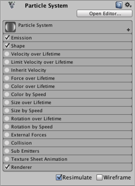

Particle System
A Particle System component simulates fluid entities such as liquids, clouds and flames by generating and animating large numbers of small 2D images in the scene. For a full introduction to particle systems and their uses, see further documentation on Particle Systems.
Properties
The Particle System component has many properties, and for convenience, the Inspector organises them into collapsible sections called "modules". These modules are documented in separate pages. See documentation on Particle System Modules to learn about each one.

To expand and collapse modules, click the bar that shows their name. Use the checkbox on the left to enable or disable the functionality of the properties in that module. For example, if you don't want to vary the sizes of particles over their lifetime, uncheck the Size over Lifetime module.
The Open Editor button displays the options in a separate Editor window, which allows you to edit multiple systems at once.
The Particle Effect panel in the Scene View contains some additional options for previewing Particle Systems.

| Property | Function |
|---|---|
| Simulate Layers | Allows you to preview Particle Systems that are not selected. By default, only selected Particle Systems play in the Scene View. However, when you set Simulate Layers to anything other than Nothing, effects that match the Layer Mask play automatically, without you needing to select them. This is particularly useful for previewing environmental effects. |
| Resimulate | When this property is enabled, the Particle System immediately applies property changes to particles it has already generated. When disabled, the Particle System leaves existing particles as they are, and only applies property changes to new particles. |
| Show Bounds | When this property is enabled, Unity displays the bounding volume around the selected Particle Systems. These bounds determine whether a Particle System is currently on screen or not. |
| Show Only Selected | When this property is enabled, Unity hides all non-selected Particle Systems, allowing you to focus on producing a single effect. |